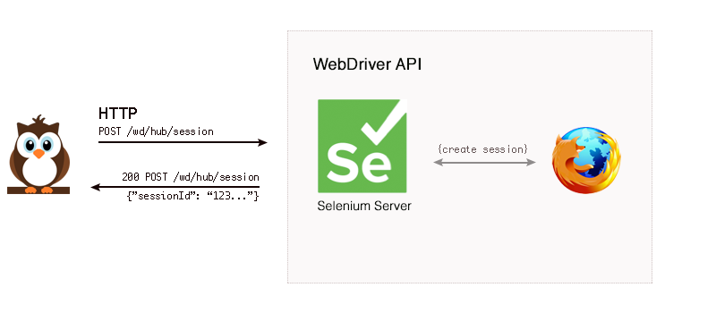
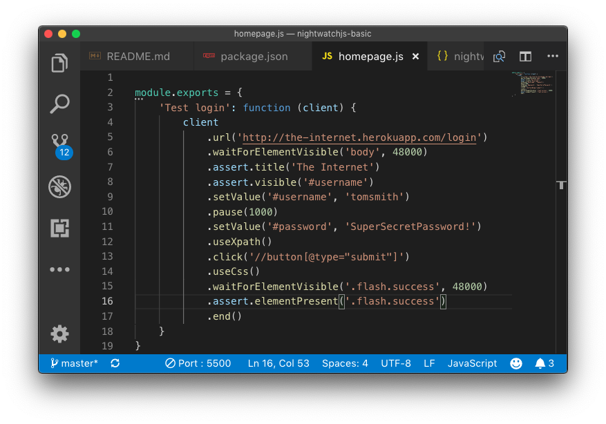

Nightwatch.js is an automated testing framework for web applications and websites, written in Node.js and using the W3C WebDriver API (formerly Selenium WebDriver).
It is a complete End-to-End testing solution which aims to simplify writing automated tests and setting up Continuous Integration. Nightwatch can also be used for writing Node.js unit and integration tests.
The name Nightwatch was inspired by the famous painting The Night Watch by Dutch artist Rembrandt van Rijn. The masterpiece is prominently displayed in the Rijksmuseum, in Amsterdam - The Netherlands.
WebDriver is a general purpose library for automating web browsers. It was started as part of the Selenium project, which is a popular and comprehensive set of tools for browser automation initially written for Java but now with support for most programming languages.
Nightwatch uses the WebDriver API to perform the browser automation related tasks, like opening windows and clicking links for instance.
WebDriver is now a W3C specification aiming to standardize browser automation. WebDriver is a remote control interface that enables introspection and control of user agents. It provides a platform and a restful HTTP api as a way for web browsers to be remotely controlled.
Nightwatch works by communicating over a restful HTTP API with a WebDriver server (such as ChromeDriver or Selenium Server). The protocol is defined by the W3C WebDriver spec, which is derived from JSON Wire protocol. See below for an example workflow for browser initialization.

Most of the times, Nightwatch needs to send at least 2 requests to the WebDriver server in order to perform a command or assertion. ...The first one being the request to locate an element given a CSS selector (or Xpath expression) ...Next to perform the actual command/assertion on the given element.
npm init and complete with basic details.npm install nightwatch to install nightwatch within workspace.selenium and chrome drivers and copy to bin directory.nightwatch.json file within working directory. The nightwatch test runner binary expects a configuration file.tests directory and create homepage.js file.package.json with test runner for scripts value.
